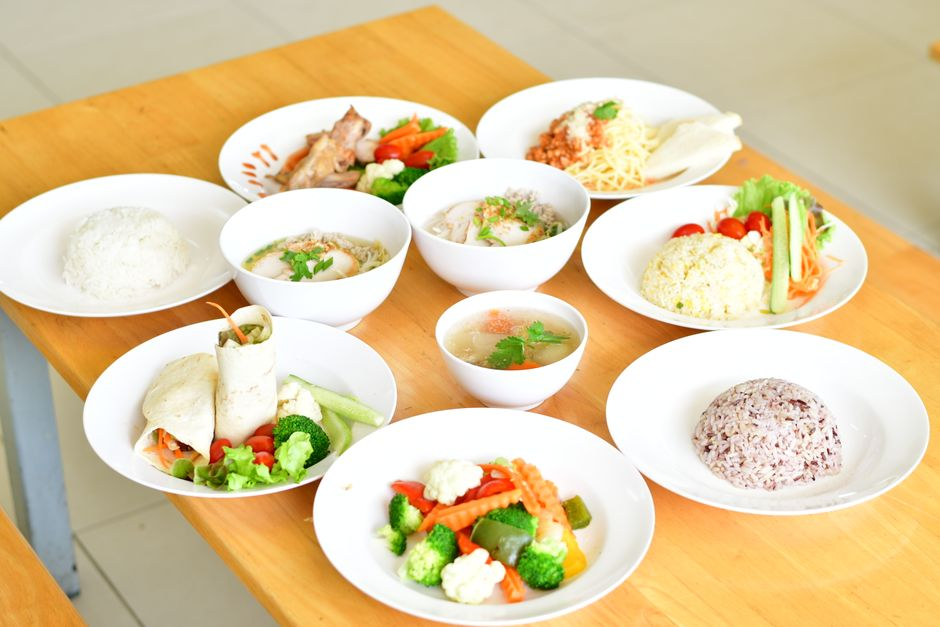

Comment préparer des repas rapides et économiques pour étudiant

Photo: Kritsana (Kid) Takhai / Pexels
Quand on manque de temps et d'argent, quelques recettes simples et un garde-manger bien garni suffisent. Voici des idées de repas prêts en 15 à 30 minutes, avec les précautions de base.
Un garde-manger de base
Riz, pâtes, flocons d'avoine, lentilles, pois chiches et haricots en conserve, tomates en conserve, huile, oignons, ail, œufs, légumes surgelés et quelques épices permettent de préparer des dizaines de repas.
Des idées rapides
- Pâtes à la sauce tomate avec des légumes surgelés et un peu de fromage.
- Riz sauté avec des légumes et un œuf, cuits à cœur.
- Omelette ou œufs brouillés bien cuits, avec des légumes et du pain.
- Soupe de lentilles : lentilles rouges, carottes, oignon et bouillon, prêtes en 25 minutes.
- Wraps aux haricots, légumes et fromage.
- Salade de pois chiches avec concombre, tomate et huile d'olive.
Cuisiner une fois, manger plusieurs fois
Doublez les quantités et mettez la moitié au frais ou au congélateur. Réfrigérez dans les deux heures suivant la cuisson et mangez dans les deux à trois jours.
Sandwichs et lunchs
Les sandwichs à la viande, aux œufs ou au poulet ne doivent pas rester des heures à température ambiante. Utilisez un sac isotherme avec un bloc réfrigérant, ou choisissez des garnitures qui se conservent bien (houmous, fromage, légumes).
Le micro-ondes
Il réchauffe très bien, mais pas toujours uniformément. Couvrez le plat, remuez à mi-chemin et vérifiez que le plat est chaud partout. Utilisez uniquement des contenants prévus pour le micro-ondes.
Budget
Comparez les prix à l'unité, préférez les produits de saison ou surgelés, et évitez les plats préparés, souvent plus chers pour une même quantité de nourriture.
Avec un peu de planification, vous pouvez manger varié et sain tout en gardant le contrôle de votre budget.
Produits recommandés
En tant que Partenaire Amazon, je réalise un bénéfice sur les achats remplissant les conditions requises.